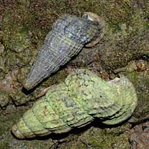
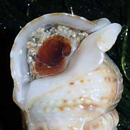
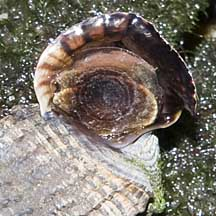

|
|
| molluscs text index | photo index |
| Phylum Mollusca > Class Gastropoda |
| Creeper,
Bazillion and Horn snails How to tell them apart? updated Oct 2016 |
| Similar snails Creeper snails (Family Cerithidae), Bazillion snails (Family Batillariidae) and Horn snails (Family Potamidae) can look quite similar in shape. Here's how to generally tell them apart, although there are exceptions and a closer look is needed to be sure. |
|
Creeper
snails
Family Cerithiidae |
Bazillion
snails
Family Batillariidae |
Horn
snails
Family Potamididae |
 |
 |
 |
|
Creeper
snails are usually smaller
(less than 2.5cm) than horn snails. |
Medium
sized (2-3cm), between small Creeper snails and larger Horn snails.
|
Horn
snails are usually larger
than most creeper snails. |
|
 |
 |
 |
|
Siphonal
canal at the shell opening is narrow and long and usually upturned
like a little spout.
Operculum made of a horn-like material with only a few or no whorls. |
Siphonal
canal at the shell opening is short and upturned like a little spout.
Operculum made of a horn-like material with many whorls in many concentric circles. |
Siphonal
canal at the shell opening is short or absent.
Operculum made of a horn-like material with many whorls in many concentric circles. |
| More comparisons |


|
References
|